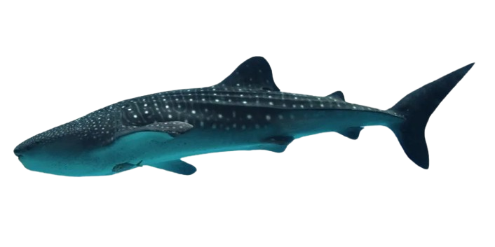

A jubarte ou baleia-jubarte, também conhecida como baleia-corcunda, baleia-cantora, baleia-corcova, baleia-de-corcova, baleia-de-bossas, baleia-preta ou baleia-xibarte é um mamífero marinho presente na maioria dos oceanos. Ela é da ordem dos cetartiodáctilos, subordem dos cetáceos e infraordem dos misticetos.

O tubarão-baleia é uma espécie de tubarão filtrador da ordem dos orectolobiformes e a maior espécie de peixe existente conhecida. O maior indivíduo confirmado tinha um comprimento de 20 metros. O tubarão-baleia detém muitos recordes de tamanho no reino animal, sendo de longe o maior vertebrado não mamífero vivo.
